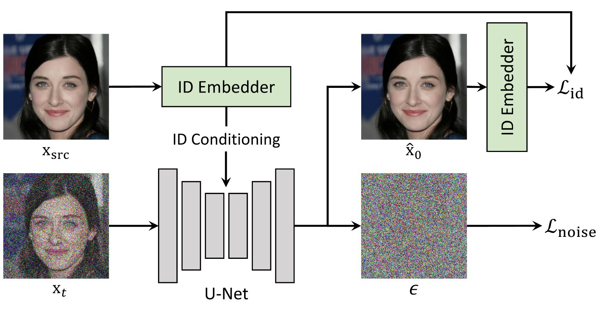
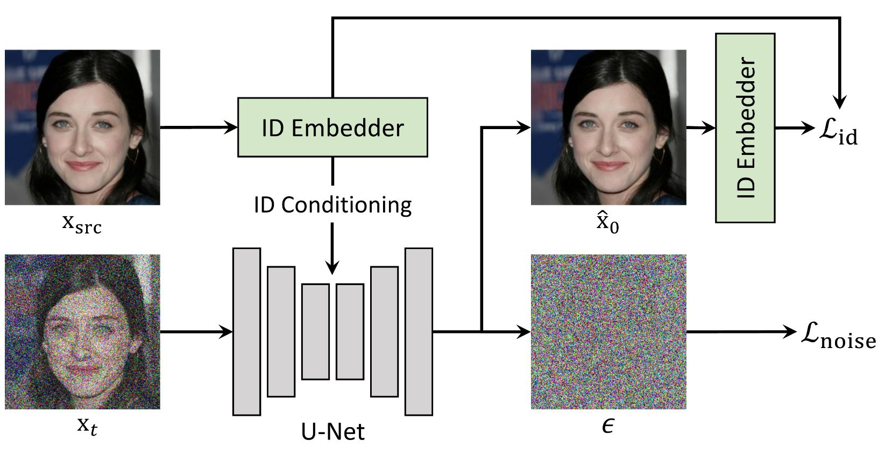
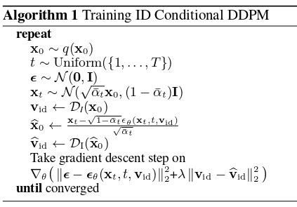

ID Conditional DDPM
We employ the structure of the conditional diffusion model, where source identity information can be injected. At the same time, we propose an identity loss for the diffusion model to preserve the facial identity effectively
We propose a novel diffusion-based face swapping framework, called DiffFace, composed of training ID Conditional DDPM, sampling with facial guidance, and a target-preserving blending. In specific, in the training process, the ID Conditional DDPM is trained to generate face images with the desired identity. In the sampling process, we use the off-the-shelf facial expert models to make the model transfer source identity while preserving target attributes faithfully. During this process, to preserve the background of the target image, we additionally propose a target-preserving blending strategy. It helps our model to keep the attributes of the target face from noise while transferring the source facial identity. In addition, without any re-training, our model can flexibly apply additional facial guidance and adaptively control the ID-attributes trade-off to achieve the desired results. To the best of our knowledge, this is the first approach that applies the diffusion model in face swapping task. Compared with previous GAN-based approaches, by taking advantage of the diffusion model for the face swapping task, DiffFace achieves better benefits such as training stability, high fidelity, and controllability. Extensive experiments show that our DiffFace is comparable or superior to the state-of-the-art methods on the standard face swapping benchmark.
We employ the structure of the conditional diffusion model, where source identity information can be injected. At the same time, we propose an identity loss for the diffusion model to preserve the facial identity effectively
The overall process for training ID Conditional DDPM. We verify the benefit of the ID Conditional DDPM in the paper
To control the facial attributes of generated images, we propose facial guidance that is applied during the diffusion process. One major advantage of using the diffusion model is that once the model is trained, it can control the image driven by the guidance during the sampling process. Thus we can obtain desired images without any re-training of the diffusion model. In order to utilize this advantage, we give facial guidance using external models, such as identity embedder, face parser, and gaze estimator during the sampling process. Note that we can use any offthe-shelf facial model, and they can be adaptively selected according to the user’s purpose.
Target preserving blending method that alters the mask intensity to better preserve structural attributes of target. Target preserving blending is to gradually increase the mask intensity from zero to one, according to the time of the diffusion process T. By adjusting the starting point where the intensity of the mask becomes one, we can adaptively maintain the structure of the target image
Our DiffFace outperforms other models in terms of changing identity-related attributes. For example, in the first and fourth rows, we notice our result reflects more vivid lips and eyes, while other results models tend to have eyes and lip colors from target images. This shows that our model more effectively transfers identity-related attributes than other models.
@article{kim2023diffface,
author = {K. Kim, Y. Kim, S. Cho, J. Seo, J. Nam, K. Lee, S. Kim, K. Lee},
title = {DiffFace: Diffusion-based Face Swapping with Facial Guidance},
journal = {Arxiv},
year = {2023},
}